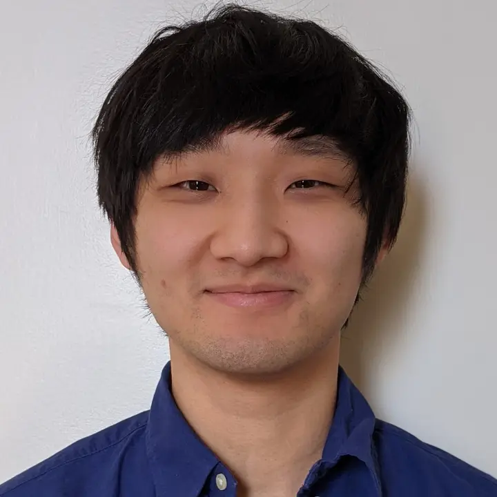

Brain extraction
Supervised, unsupervised, and synthetic-data approaches for accurate, efficient skull stripping.
Medical imaging · machine learning · open science
I am a Postdoctoral Research Fellow in the Department of Radiology at the University of Michigan. My work develops generalizable deep-learning methods for medical image segmentation, synthesis, and analysis.

Research agenda
My research centers on models that learn useful anatomy while remaining resilient across scanners, modalities, species, and patient populations.
Supervised, unsupervised, and synthetic-data approaches for accurate, efficient skull stripping.
Simulation, translation, and inpainting methods that preserve clinically meaningful anatomical detail.
Registration and anomaly detection for neuroimaging, retinal imaging, and cross-modality research.
Selected work
Community
I have mentored Google Summer of Code projects, led brain-segmentation tutorials for the DIPY Workshop, taught deep learning for medical imaging, and reviewed for ICLR, ICML, and neuroimaging journals.